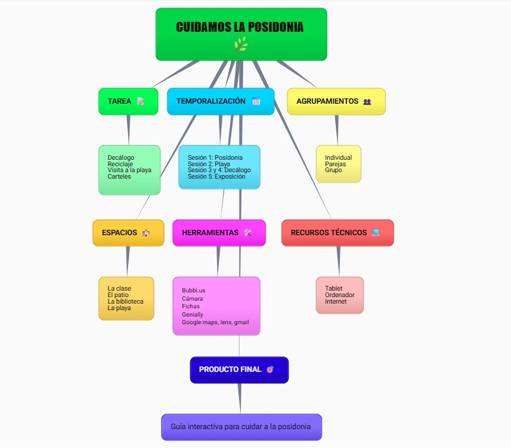

Línea temporal de la situación de aprendizaje
🧭 Organización general
El proyecto se desarrollará a lo largo de varias sesiones, en las que el alumnado irá avanzando desde la exploración inicial hasta la creación del producto final. Cada fase está diseñada para favorecer el aprendizaje progresivo, la colaboración y la reflexión.
⏱️ Secuenciación de sesiones
🟢 Fase 1: Introducción y activación (Sesiones 1–2)
Presentación del proyecto y del producto final
Activación de conocimientos previos
Exploración del tema mediante ejemplos reales
Organización de equipos de trabajo
📌 Objetivo: comprender qué se va a hacer y por qué es importante.
🔵 Fase 2: Investigación y curación de contenidos (Sesiones 3–5)
Búsqueda de información en fuentes fiables
Uso de herramientas de curación de contenidos (docente y alumnado)
Selección y organización de recursos
Análisis crítico de la información
📌 Objetivo: aprender a seleccionar información relevante y fiable.
🟣 Fase 3: Planificación del producto final (Sesiones 6–7)
Diseño del guion o estructura del producto
Reparto de roles dentro del grupo
Elaboración de borradores
Revisión guiada del docente
📌 Objetivo: planificar el trabajo antes de la producción.
🟠 Fase 4: Producción del producto final (Sesiones 8–10)
Creación del producto final (vídeo, podcast, presentación, etc.)
Uso de herramientas digitales
Aplicación de los contenidos aprendidos
Revisión continua del trabajo
📌 Objetivo: desarrollar el producto final de forma colaborativa.
🔴 Fase 5: Presentación y difusión (Sesión 11)
Presentación de los productos finales
Exposición oral o digital
Retroalimentación entre iguales
Reflexión final del proceso
📌 Objetivo: comunicar el trabajo realizado y valorar el aprendizaje.
⚫ Fase 6: Evaluación y cierre (Sesión 12)
Autoevaluación y coevaluación
Evaluación del docente
Análisis de fortalezas y mejoras
Cierre del proyecto
📌 Objetivo: reflexionar sobre el aprendizaje alcanzado.
Enfoque DUA
La línea temporal se ha diseñado para:
- Favorecer distintos ritmos de aprendizaje
- Permitir el trabajo colaborativo y flexible
- Ofrecer múltiples formas de participación
- Adaptarse a la diversidad del aula
